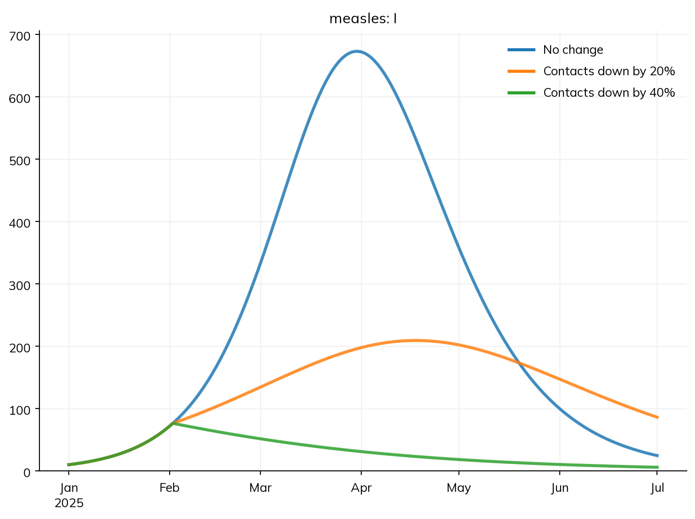

A sim (ss.Sim) is one model put together with everything needed to run it: the diseases, the population, the time span, how people mix, and any births and deaths, interventions, and analyzers. It runs them in the right order, and holds the results afterwards. This page covers what a sim takes, what it prints, what happens when it is built, and the ways of running it: in full, part of the way, and again with something changed. It ends with saving sims and with the make_sim() pattern that larger projects are built around. T1 – Getting started and T2 – Building a model build and run the measles model used here; running many sims and comparing them is in Scenarios.
The smallest sim
A sim needs a model and, usually, a population and a time span. Here is a measles outbreak in a town of 100,000 people, run for 50 days:
import starsim as ssS, I, R = ss.states('S I R')beta = ss.par(1.9) # Transmission rate per dayinfection = S >> I @ beta*Irecovery = I >> R @ ss.days(8) # Infectious for 8 days on averagemeasles = ss.Disease(infection, recovery, init_prev=0.001)sim = ss.Sim(measles, total_pop=100_000, stop=ss.days(50))sim.run()sim.plot()
Sim: measles, 100,000 people, as an ODE, days 0 to 50
measles: R0 = 15.2, with 100 infectious at the start
Done in 0.003 s; measles: 99,900 infections; at most 74,112 infectious, on day 6
A run prints:
What it runs, and how: the diseases, the population, the solver (here an ODE, since nothing in the model needs individual people; see Solvers and backends), and the time span.
R0 of each disease with the number infectious at the start, as a check that the model is the one you meant: here R0 = β × the infectious period = 1.9 × 8 ≈ 15, as for measles. If some people start immune, the line gives the reproduction number at the start too, e.g. “R0 = 15.2 (R = 1.52 at the start, with 10% susceptible)”.
Notes, if any: something Starsim assumed, approximated, or wants you to check, such as a step that is long for the rates in the model. Notes are kept in sim.notes too.
Progress, for a run that goes a step at a time (as agents, say), rather than all at once.
A closing line: how long it took, the total number of infections, and the size and timing of the peak.
How much is printed is set by verbose, given to the sim or to sim.run(): 0 prints nothing (the usual choice inside loops and fits), 1 the lines above (the default), and 2 everything, including a line for each step. A fraction between 0 and 1 prints the progress of a long run every that share of it: verbose=0.1 every 10%.
What a sim takes
The settings of a sim are its keywords. The ones most models use:
Data to compare the results with, by name (see Results)
solver
How to run: 'auto' (the default), 'ode', 'binomial', 'gillespie', 'tau', or 'abm'
rand_seed
The random seed, for a stochastic run (default 1; see Scenarios)
label
A name for the sim, used in plots and comparisons
verbose
How much to print (above)
sim.pars holds all of them after the sim is made, including the ones not given. sim.describe() shows the whole model as Starsim has built it, with each value it chose itself marked (see Writing models).
total_pop and n_agents are separate on purpose. total_pop is the number of people the model stands for, and is the same under every solver; n_agents is how many individuals are followed when the sim runs as agents. Given both, each agent stands for total_pop/n_agents people, which saves time at the cost of coarser random events (see Branching and rescaling):
Sim: measles, as 10,000 agents, each 10 people, days 0 to 50
Note: consider a shorter step (e.g. dt=ss.days(0.25)): each step is 1 day, and infection transmits at up to 1.9 per day (with everyone infectious), 85% in a step (and I is fast too). Taking whole steps, agents may differ from the ODE by an amount of that order; sim.check_dt() shows how much it matters
Done in 0.044 s; measles: 99,900 infections; at most 78,380 infectious, on day 9
The first line now says “as 10,000 agents, each 10 people”. The epidemic is much the same as the ODE’s, but not identical: each agent’s infection is a random event.
Settings in a dict
The settings can also be collected in a dict and passed together, which is handy when several sims share them:
pars =dict(total_pop=100_000, start='2025-01-01', stop='2025-03-01', verbose=0)town = ss.Sim(measles, **pars)city = ss.Sim(pars, diseases=measles, total_pop=1_000_000) # The same settings, with one changed
A dict given as the first argument is read as settings, and a keyword given as well overrides the same setting in the dict, as total_pop does for city. In such a dict, a module from Starsim’s library can be given as a dict of its own parameters, with its name as type. This is a shorthand found in many existing scripts, for example for an agent-based SIR on a random network:
It is the same as giving the modules themselves, diseases=ss.SIR(beta=..., dur_inf=...) and networks=ss.RandomNet(n_contacts=4). A name on its own (diseases='sir') uses the module’s default parameters.
What happens before the first step
Nothing is computed when a sim is made. sim.init(), which sim.run() calls if it hasn’t been called, builds the sim:
It fills in whatever was left out (the unit of time from the values in the model, how long each state lasts beyond its average, how people mix, where people start) and records each choice, so that describe() can show it.
It checks the model: unknown parameter names, values outside their bounds, and shapes that don’t match the model’s groups are errors here, before the run.
It chooses the solver, makes the people (with a default age and sex structure, unless a population is given; see People and agents), adds each module’s states, parameters, and results, sets up the time steps, and starts the random number generators.
Calling sim.init() yourself is useful for looking at the people or the model before a long run, or for finding an error without waiting for one.
A sim copies the modules it is given, so the same disease can be given to several sims. After a run, use the sim’s own copy: sim.diseases.measles, not the variable measles, which is never run.
Running again, and variants
sim.run() on a sim that has already run runs it again from the start, as it was before it was first run: changes made to a sim once it has been initialized belong to that run only. To run it again with something changed, use sim.new(), which makes a new sim as this one was before it was run, with whatever is given changed. Here the same outbreak with a lower transmission rate, as if contacts were fewer, compared with the original:
With β = 1.2, R0 is about 10 rather than 15, and the peak comes later and lower. What sim.new() changes can be settings (sim.new(total_pop=1_000_000)), parameters of the model by name (sim.new(pars=dict(beta=1.2)), for a parameter made with ss.par() and so given a name; see Parameters), or modules (sim.new(interventions=campaign)). This is the usual way to make the scenarios of a comparison (see Scenarios).
Three other ways of running again:
sim.copy() makes an exact copy, including the state of a sim part of the way through a run (below).
sim.run(solver='abm') runs the same sim as agents, building it again for the new solver, and sim.run(n_runs=20) runs it 20 times with different seeds, returning the runs together as an ss.MultiSim (see Scenarios).
sim.restart() takes a sim back to its start without building it again, optionally with new parameter values (sim.restart(pars=dict(beta=1.2))). For a model that is nothing but compartments this makes repeated runs many times faster, and sim.run(n_runs=...) and sim.fit() use it where they can.
Running part of the way
sim.run(until=...) runs up to a given time and stops; a later sim.run() carries on from there. This is useful for looking at the state of a sim in the middle of a run, for changing it before going on, and for running a shared start (a burn-in) once and then branching into scenarios. Here, measles reaches a town in which 90% of people are immune; a month in, the scenarios differ by how much contacts are reduced from then on (by closing schools, say), each a copy of the sim at that point with an ss.modify() added:
S, I, R = ss.states('S I R')beta = ss.par(1.9)measles = ss.Disease(S >> I @ beta*I, I >> R @ ss.days(8), init=dict(R=0.9), init_n=dict(I=10)) # 90% immune, 10 infectiousbase = ss.Sim(measles, total_pop=100_000, start='2025-01-01', stop='2025-07-01', verbose=0)base.run(until='2025-02-01')reductions = {'No change': 0, 'Contacts down by 20%': 0.2, 'Contacts down by 40%': 0.4}sims = {}for label, reduction in reductions.items(): sim = base.copy() sim.add_module(ss.modify('measles.pars.beta', multiply=1-reduction)) sims[label] = simmsim = ss.parallel(sims)msim.plot('measles.I')

A module added this way (sim.add_module()) acts from the time it is added; its results cover the whole run, but are filled in only from then. Only modules that leave the layout of the model as it is can be added part of the way: a vaccine adds a state for the people who hold it, so ss.vaccinate() must be given when the sim is made (with a start date), and Starsim says so if you try.
A parameter of the copy can also be set directly before it carries on, which here has the same effect as the 40% reduction:
Copying a sim takes some time too, so a shared start saves time only when it is long compared with the rest of the run, or when there are many scenarios. For a model that runs in a fraction of a second, as here, it is simpler to run each scenario in full with sim.new() and an intervention that starts on the date.
The order of each step
For a declared model, Starsim works out the order of everything in a step from the model itself. For modules written as code it matters, because each module’s code runs at a fixed point in the step:
Each module’s start_step(), which mostly moves the random number generators on.
Births, deaths, and other demographics.
Progression of each disease (step_state(): recoveries, deaths, and other moves that don’t depend on contact).
Connectors (which change one module according to another).
Networks (contacts form and end).
Interventions.
Transmission (each disease’s step()).
Deaths are carried out (people.step_die()), with each death assigned to one cause, so that every death is counted once.
Results are recorded.
Analyzers (which see the step’s results).
Each module’s, the people’s, and the sim’s finish_step().
So on a single day, a woman who becomes pregnant, develops symptoms, moves house, takes a test, and transmits an infection does them in that order, and transmits to her new household rather than her old one. Putting demographics first means that a child born during a step can be infected during that step (for example, by her mother), and that the effect of an infection during pregnancy is captured. Putting networks before transmission means that a new partnership can transmit in the step it forms, which matters for sexually transmitted infections with short partnerships.
Modules can have time steps of their own (demographics once a year and a disease once a day, say); the sim keeps a plan of which module runs on which step. sim.loop.to_df(), after sim.init(), lists every function called in every step, and sim.loop.plot() draws it. A declared model with nothing but compartments is run in one go rather than step by step, which is why its run is so fast; see Model execution and Custom modules.
Saving and loading
sim.save() saves a sim to a file, and ss.load() loads it again:
By default a saved sim that has finished keeps its results but not the people, which makes the file much smaller; a sim saved part of the way through keeps everything, so that it can be loaded and run on (shrink=False keeps everything in either case). A saved sim is a Python pickle, so it needs the same version of Starsim (and of any modules written as code) to load. For the results alone, sim.to_df() gives them as a table, which can be saved as a CSV or Excel file, and sim.to_json() gives the results and settings as JSON (see Results). To write the model itself in another format (SBML, odin), see Import and export.
sim.shrink() does the same in memory: it removes the people and the other per-agent arrays from a finished sim, keeping the results. For a sim of agents this is most of its size, so it is worth doing when keeping many runs. ss.MultiSim and ss.parallel() already shrink the sims they run.
Larger projects: make_sim()
A project with more than a few scenarios is usually built around one function that makes the sim, with an argument for each thing that varies, so that every scenario, seed, and calibration run is made the same way. A sketch of the pattern, as an HIV project might have it:
import starsim as ssimport starsim.library as sslimport pandas as pddef make_sim(seed=1, n_agents=10_000, start=1990, stop=2030, scenario='baseline', debug=False):""" Make the sim for one scenario and seed """if debug: # A quick version for testing the code n_agents, stop =1_000, 2000# Population and demography, from data people = ss.People(n_agents, age_data=pd.read_csv('data/age_dist_1990.csv')) pregnancy = ss.Pregnancy(fertility_rate=pd.read_csv('data/asfr.csv')) deaths = ss.Deaths(death_rate=pd.read_csv('data/deaths.csv'))# Networks, disease, and interventions sexual = ss.SexualNet() maternal = ss.MaternalNet() hiv = ssl.HIV(beta={'sexualnet': [0.008, 0.004], 'maternalnet': [0.2, 0]}) interventions = []if scenario =='treat': interventions.append(ssl.ART(year=[2004, 2020], coverage=[0.1, 0.8])) sim = ss.Sim( people = people, diseases = hiv, networks = [sexual, maternal], demographics = [pregnancy, deaths], interventions = interventions, start = start, stop = stop, total_pop =9.98e6, rand_seed = seed, label = scenario, )return sim
The scenarios and seeds are then a loop over its arguments, run together with ss.parallel() (see Scenarios). If making the sim is itself slow (reading large files, say), the sims can be made in parallel too, with Sciris:
import sciris as sciterkwargs = [dict(seed=seed, scenario=scen) for seed inrange(20) for scen in ['baseline', 'treat']]sims = sc.parallelize(make_sim, iterkwargs=iterkwargs)msim = ss.parallel(sims)
Keep anything that differs between scenarios as an argument rather than editing the sim afterwards, and keep debug=True as a quick way to check the code end to end. For running such a project on a cluster or as a web app, see Deployment.
Pitfalls
Using the module you made rather than the sim’s copy. After a run, sim.diseases.measles has the run’s state; the measles you made does not. Likewise, a function given to a sim should read what it needs from the sim it is given (lambda sim: sim.diseases.measles.I.n), not from a variable.
Changing a setting after the sim is built. Once a sim is initialized its settings belong to that run, and setting one (sim.pars.stop = 30) raises an error; give it to sim.new(stop=30) instead.
Settings given twice. A setting given in a pars dict and again as a keyword takes the keyword’s value, without a word.
A sim that isn’t what you meant. Read the first lines a run prints, and sim.describe(): R0, the unit of time, and the solver catch most mistakes before any result is read. More are in Profiling and debugging.